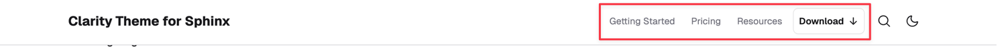
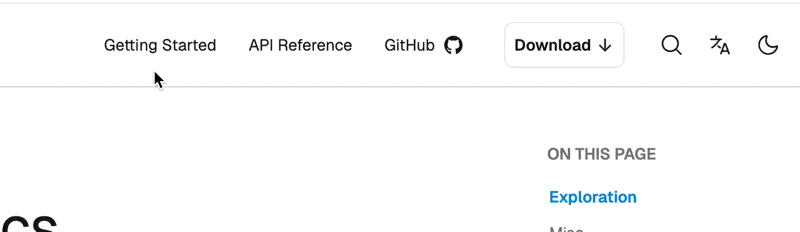

Header menu#
Add a navigation menu to the header with links or call-to-action (CTA) buttons. The header menu appears next to the search icon on the right side of the header.

Key features:
Display plain text, custom HTML, or buttons
Link to external URLs or documentation pages
Add tooltips on hover

Menu items#
Configure the header menu using the header_menu option in html_theme_options. It accepts a list of menu items.
Each menu item requires the following fields:
content: text or inline HTML (e.g.,<svg>for an icon)url: link to either document or URL (see bellow)
Optional fields:
as: render style—supports"as": "button"for button stylingtooltip: text to display on hover
For example:
html_theme_options = {
"header_menu": [
{
"content": "Getting Started",
"url": "https://some/url",
"tooltip": "Tooltip for Getting Started",
},
{
"content": "API Reference",
"url": "api",
},
{
"content": """GitHub <svg xmlns="http://www.w3.org/2000/svg" width="24" height="24" viewBox="0 0 24 24"><path fill="currentColor" d="M9.35 16.88c0 .07-.07.12-.17.12S9 17 9 16.88s.08-.12.17-.12s.18.05.18.12m-1-.15c0 .07 0 .15.14.17a.15.15 0 0 0 .2-.07c0-.07 0-.14-.14-.17s-.18 0-.2.07m1.42-.05c-.09 0-.15.08-.14.16s.09.11.19.09s.15-.09.14-.16s-.09-.1-.19-.09M11.9 4A7.83 7.83 0 0 0 4 12.07A8.29 8.29 0 0 0 9.47 20c.41.07.56-.19.56-.4v-2s-2.26.5-2.74-1c0 0-.36-1-.89-1.21c0 0-.74-.52.05-.51a1.67 1.67 0 0 1 1.24.85a1.69 1.69 0 0 0 2.36.69a1.83 1.83 0 0 1 .51-1.11c-1.8-.21-3.62-.47-3.62-3.66A2.54 2.54 0 0 1 7.7 9.7a3.2 3.2 0 0 1 .08-2.24c.68-.22 2.23.89 2.23.89a7.46 7.46 0 0 1 4.05 0s1.55-1.11 2.23-.89a3.14 3.14 0 0 1 .08 2.24a2.6 2.6 0 0 1 .83 1.95c0 3.2-1.9 3.45-3.7 3.66a2 2 0 0 1 .5 1.5v2.77a.42.42 0 0 0 .56.4A8.22 8.22 0 0 0 20 12.07A8 8 0 0 0 11.9 4M7.14 15.41v.17a.12.12 0 0 0 .17 0s0-.11 0-.18s-.13-.03-.17.01m-.35-.27s0 .1.07.13a.09.09 0 0 0 .14 0s0-.1-.07-.13s-.12-.03-.14 0m1 1.18v.21c0 .07.17.08.21 0s0-.14 0-.21s-.13-.05-.17 0Zm-.37-.49v.2c0 .08.14.11.19.08a.16.16 0 0 0 0-.21c-.05-.08-.13-.11-.19-.07"/></svg>""",
"url": "some/url",
"tooltip": "Tooltip for GitHub",
},
{
"content": 'Download <svg xmlns="http://www.w3.org/2000/svg" width="16" height="16" viewBox="0 0 16 16" fill="none" stroke="currentColor" stroke-width="1.5" stroke-linecap="round" stroke-linejoin="round" aria-hidden="true" focusable="false"><path d="M8 3v8"/><path d="M3.5 8.5L8 13l4.5-4.5"/></svg>',
"url": "some/url",
"as": "button",
"tooltip": "Download the latest version",
},
],
}
Note
Embedded HTML (like <svg>) includes quotes—use triple-quoted Python strings.
Menu item links#
The menu item are links. Its the url field defines the target. You can link either to
a page in your documentation, or
an external address.
The url value which does not start with http or https is considered a path to page in your documentation.
For example, the user-guide/intro path will intro.rst under user-guide folder:
docs/
├── user-guide/
│ ├── index.rst
│ └── intro.rst